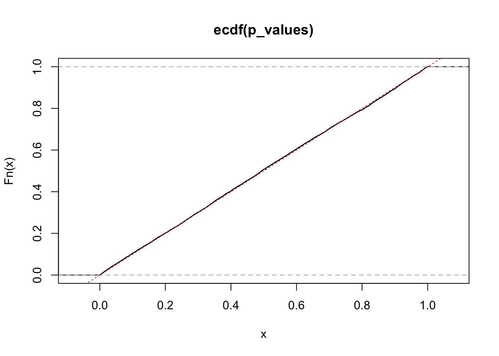

library('tidyverse')
set.seed(1)Understanding the multivariate normal distribution
R
Relations
n <- 1e4
x <- rnorm(n)
p_values <- pnorm(x)
plot(ecdf(p_values))
abline(0, 1, col = 'red', lty = 'dotted')
# help(package = 'mvtnorm')
# help(package = 'multcomp')
library('mvtnorm')
var_x1 <- 1
var_x2 <- 1
cov_x1_x2 <- 0.3
sigma <- cbind(c(var_x1, cov_x1_x2), c(cov_x1_x2, var_x2))
dat <- rmvnorm(n, mean = c(0, 0), sigma = sigma)
calc_p <- function(x) {
pmvnorm(lower = ifelse(x < 0, x, -Inf),
upper = ifelse(x > 0, x, Inf),
corr = cov2cor(sigma))
}
# should be a straight line, but isn't - I don't understand why...
p_values <- apply(dat[1:min(n, 1e4), ], 1, calc_p)
plot(ecdf(p_values), xlim = c(0, 1))
abline(0, 1, col = 'red', lty = 'dotted')ii_1 <- dat[, 1] < qnorm(0.025, sd = sqrt(var_x1))
ii_2 <- dat[, 2] < qnorm(0.025, sd = sqrt(var_x2))
sum(ii_1)[1] 229sum(ii_2)[1] 246sum(ii_1 | ii_2)[1] 457sum(ii_1 & ii_2)[1] 18